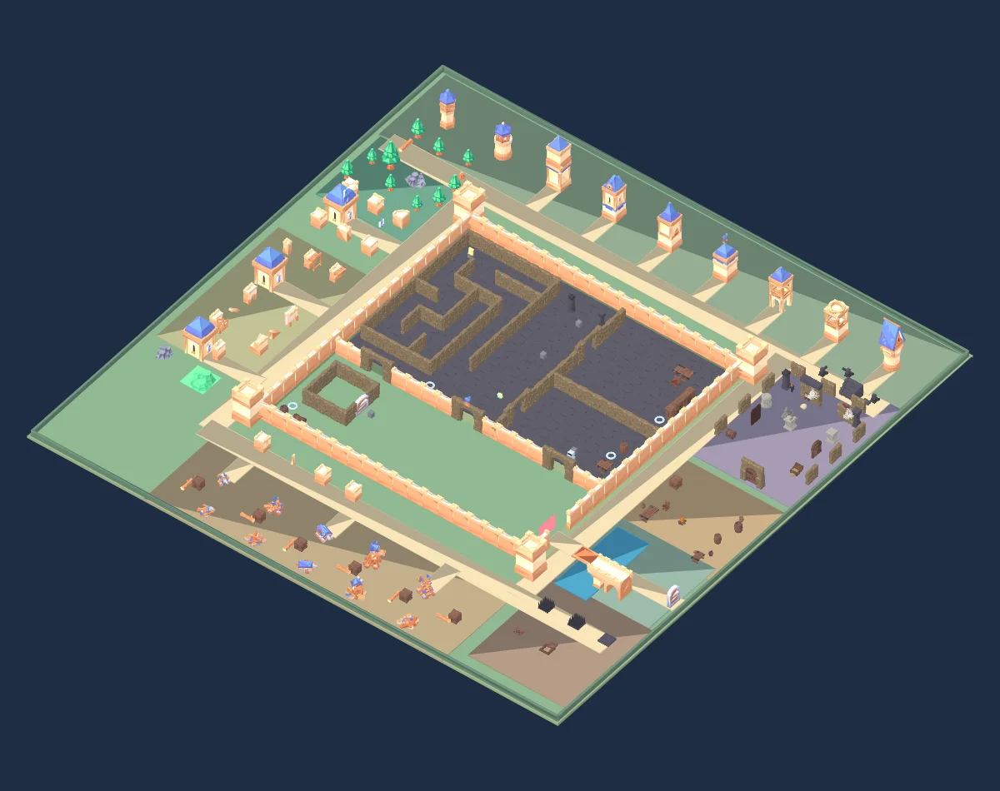
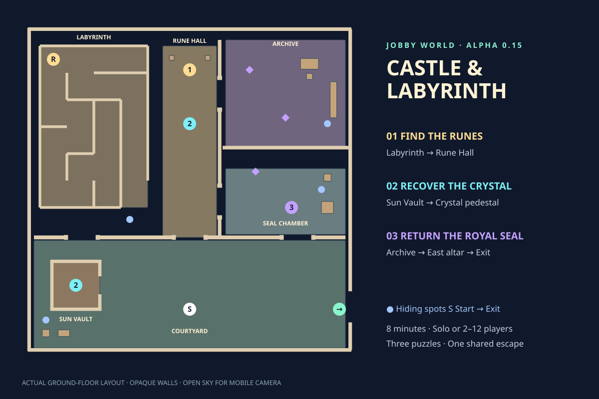

Read. Remember. Unlock.
Enter the west labyrinth from the courtyard. Find the rune tablet at its far end. It reveals a three-rune sequence and the royal seal. Enter the runes in order at the Rune Hall lock.
ALPHA 0.15 · A NEW ESCAPE
A courtyard, a maze and three linked puzzles. Play your own hero, avoid the guardian, and open the east gate before eight minutes run out.


Enter the west labyrinth from the courtyard. Find the rune tablet at its far end. It reveals a three-rune sequence and the royal seal. Enter the runes in order at the Rune Hall lock.
Use the courtyard lever to raise the Sun Vault portcullis. Hold it for a teammate, or use the 18-second solo timer. Take the Sun Crystal and place it on the central pedestal. An inside release prevents anyone getting trapped.
Find the royal seal matching the tablet. Carry it from the archive to the east altar. Carrying slows you down. The correct seal opens the east gate; a wrong choice alerts the guardian.
The guardian follows paths around solid walls. Running and wrong answers make noise. Use a marked blue hiding spot when chased. Caught teammates wait in the rescue area: hold RESCUE for two seconds, or they are released after twelve seconds. Solved puzzles stay solved.
Touch: left stick to move, drag the scene to orbit, pinch to zoom, hold RUN, tap JUMP. Hold the action button until it fills for longer interactions. Mic and speaker stay in small side buttons.
Points: solo escapes earn 80 points. Active teammates earn 50 points plus their puzzle and rescue contributions. Your existing player profile and recovery code keep your points across phones.
Built with the complete CC0 Kenney Castle Kit and Quaternius Modular Dungeons packs. Inspect all 124 models and download the original packs →